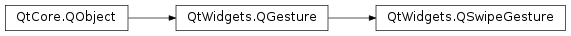
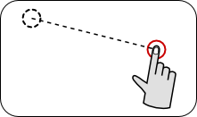

QSwipeGesture¶
Note
This class was introduced in Qt 4.6.
Synopsis¶
Functions¶
- def
horizontalDirection() - def
setSwipeAngle(value) - def
swipeAngle() - def
verticalDirection()
Detailed Description¶
The
PySide2.QtWidgets.QSwipeGestureclass describes a swipe gesture made by the user.For an overview of gesture handling in Qt and information on using gestures in your applications, see the Gestures in Widgets and Graphics View document.
-
class
PySide2.QtWidgets.QSwipeGesture([parent=nullptr])¶ Parameters: parent – PySide2.QtCore.QObject
-
PySide2.QtWidgets.QSwipeGesture.SwipeDirection¶ This enum describes the possible directions for the gesture’s motion along the horizontal and vertical axes.
Constant Description QSwipeGesture.NoDirection The gesture had no motion associated with it on a particular axis. QSwipeGesture.Left The gesture involved a horizontal motion to the left. QSwipeGesture.Right The gesture involved a horizontal motion to the right. QSwipeGesture.Up The gesture involved an upward vertical motion. QSwipeGesture.Down The gesture involved a downward vertical motion.
-
PySide2.QtWidgets.QSwipeGesture.horizontalDirection()¶ Return type: PySide2.QtWidgets.QSwipeGesture.SwipeDirection
-
PySide2.QtWidgets.QSwipeGesture.setSwipeAngle(value)¶ Parameters: value – PySide2.QtCore.qreal
-
PySide2.QtWidgets.QSwipeGesture.swipeAngle()¶ Return type: PySide2.QtCore.qreal
-
PySide2.QtWidgets.QSwipeGesture.verticalDirection()¶ Return type: PySide2.QtWidgets.QSwipeGesture.SwipeDirection
© 2018 The Qt Company Ltd. Documentation contributions included herein are the copyrights of their respective owners. The documentation provided herein is licensed under the terms of the GNU Free Documentation License version 1.3 as published by the Free Software Foundation. Qt and respective logos are trademarks of The Qt Company Ltd. in Finland and/or other countries worldwide. All other trademarks are property of their respective owners.